Aprenda a criar um Sistema de Energia Solar fora da rede elétrica e economize milhares de reais com conta de luz.
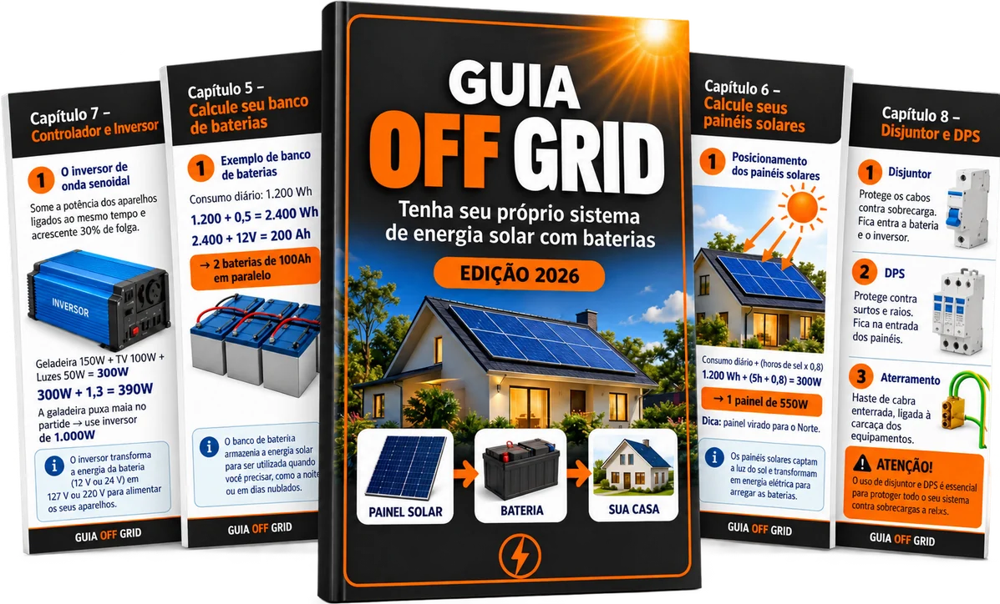
Projeto Tradicional
com bateria de lítio
Método OFF GRID
com bateria comum
A diferença toda está na bateria — é ela que representa a maior parte do custo de um projeto de energia solar. Trocando a bateria de lítio por uma bateria comum, você tem o mesmo resultado: sua própria energia, sem pagar nada pra companhia de luz, gastando uma fração do valor.
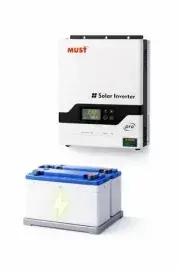
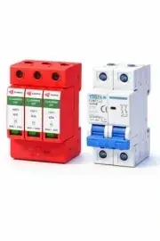
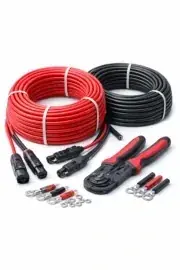
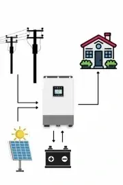
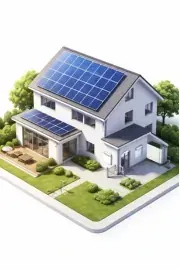
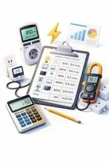
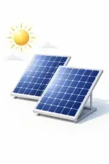
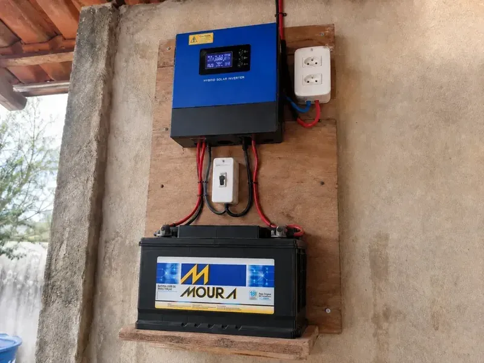
"Seguindo o passo a passo do curso, hoje mantenho a iluminação da casa e o roteador de internet funcionando direto por esse sistema. Nunca imaginei que ia conseguir montar isso sozinho."
— Roberto, aluno do curso
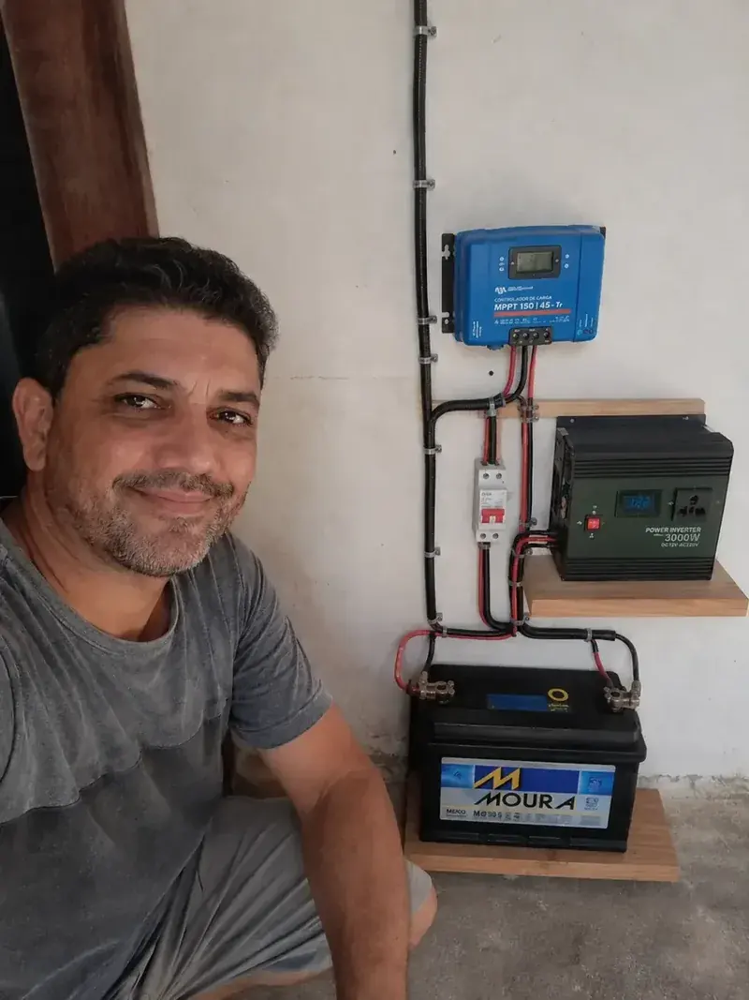
"Hoje minha geladeira funciona direto no sistema, sem depender da rede. O curso explica tudo tão bem que montei sozinho em um fim de semana."
— João, aluno do curso
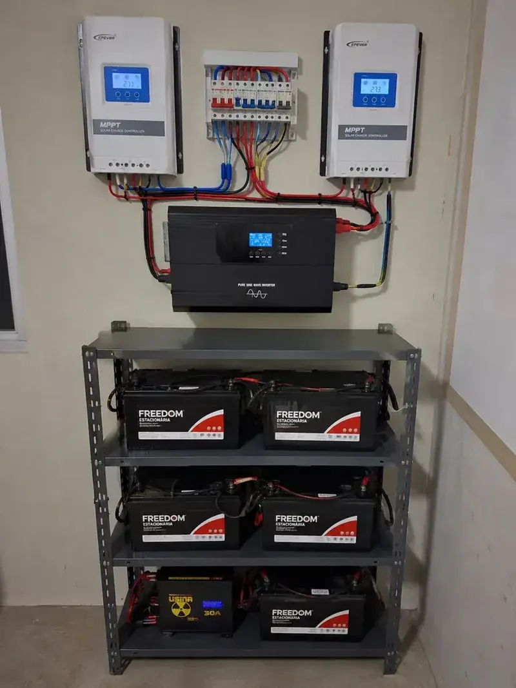
"Depois do primeiro sistema pequeno, resolvi ampliar e hoje alimento geladeira, TV, iluminação e roteador com esse aqui. O curso ensina a escalar do jeitinho certo."
— Carlos, aluno do curso
Bônus incluso
Receba de brinde 10 projetos de sistemas de energia solar de pequeno, médio e grande porte, prontos pra copiar e montar.
Acesso imediato. Pagamento único. Sem mensalidade.
De R$ 59,90 por
Compra 100% segura
Teste sem risco. Se não gostar, devolvemos todo o seu dinheiro.
Não. A apostila ensina do zero, sem termo técnico complicado.